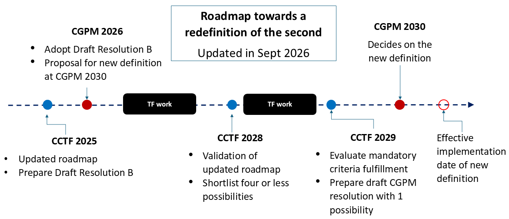

Материалы к лекциям · Русский перевод
Вопросы о переопределении секунды
Источник: Международное бюро мер и весов (BIPM). Неофициальный русский перевод основного содержания английской веб-страницы. Дата проверки: 16 ноября 2026 года.
Часто задаваемые вопросы о переопределении секунды
Рабочая группа Консультативного комитета по времени и частоте (CCTF) по обновлению дорожной карты переопределения секунды.
Содержание включает вопросы о сроках, причинах и вариантах переопределения, будущем цезиевых эталонов, подготовке пользователей и критериях готовности. В версии 2.0 добавлены вопросы о передаче времени через GNSS, новых систематических смещениях частоты и преимуществах и недостатках вариантов определения. Все вопросы и ответы приведены ниже.
Каковы сроки переопределения?
Сроки определяются заседаниями Генеральной конференции по мерам и весам (ГКМВ), которые проводятся каждые четыре года. Обновление дорожной карты CCTF 2025 года сохраняет 2030 год в качестве решающего этапа.
Решение о новом определении и дате его введения на ГКМВ 2030 возможно при условии достижения консенсуса и выполнения обязательных критериев. Если решение будет принято, введение нового определения ожидается после ГКМВ 2030.
Дорожная карта переопределения секунды


Обозначения на схеме: CCTF — Консультативный комитет по времени и частоте; CGPM — Генеральная конференция по мерам и весам (ГКМВ); TF — целевая группа по обновлению дорожной карты. Чёрные блоки «TF work» показывают работу группы между этапами.
- CCTF 2025: обновить дорожную карту; подготовить проект резолюции B.
- ГКМВ 2026: принять проект резолюции B; предложение нового определения на ГКМВ 2030.
- Работа рабочей группы между этапами ГКМВ 2026 и CCTF 2028.
- CCTF 2028: подтвердить обновлённую дорожную карту; сократить список до четырёх или меньшего числа возможностей.
- Работа рабочей группы между этапами CCTF 2028 и CCTF 2029.
- CCTF 2029: оценить выполнение обязательных критериев; подготовить проект резолюции ГКМВ с одной возможностью.
- ГКМВ 2030: принять решение о новом определении.
- После ГКМВ 2030: дата фактического введения нового определения.
Почему сообщество хочет переопределить секунду?
С метрологической точки зрения достигнут этап, когда лучшие реализации действующего определения — цезиевые фонтанные часы на холодных атомах — уже превзойдены несколькими оптическими стандартами частоты, которые используются как вторичные воспроизведения секунды. Некоторые из них достигли на два порядка меньших систематических неопределённостей и соответственно меньшей нестабильности частоты, чем цезиевые фонтанные часы; прогресс продолжается.
Таким образом, точность измерений частоты ограничивается действующим определением, а не технологическим уровнем, достигнутым наиболее передовыми научными коллективами. Это ставит под вопрос признание секунды СИ в качестве универсальной общей единицы времени и может препятствовать научному и техническому прогрессу.
Как и в 1967 году, это побуждает сообщество изучить альтернативные варианты и выбрать новое определение, соответствующее современным технологическим возможностям и способное долго оставаться на вершине метрологической пирамиды.
Каковы варианты переопределения секунды?
Единицы СИ в настоящее время определяются с помощью семи природных констант с фиксированными числовыми значениями. Определяющая константа для секунды ΔνCs — микроволновая частота, характеризующая атом Cs. Для повышения точности рассматриваются два варианта нового определения на основе оптического перехода:
- Вариант 1: выбрать один оптический атомный переход вместо ΔνCs и зафиксировать его частоту в качестве нового определения секунды.
- Вариант 2: создать новую определяющую константу из взвешенного геометрического среднего оптических частот нескольких атомных переходов.
Рассматривался также третий вариант — фиксация другой фундаментальной константы, например массы электрона. Однако сейчас он неудовлетворителен: ни одна такая константа не известна достаточно точно, чтобы конкурировать даже с действующим определением секунды.
Каждый из этих вариантов повлияет на определения других основных единиц, за исключением моля. Более подробные технические сведения приведены в публикации о дорожной карте переопределения (PDF на сайте NIST).
Что произойдёт с цезиевыми эталонами после переопределения?
После переопределения у цезиевых эталонов появится дополнительная неопределённость порядка 1 × 10−16, но она будет существенна лишь для неопределённости, приписываемой самым лучшим цезиевым эталонам, таким как фонтаны. Цезиевые фонтаны станут вторичным воспроизведением секунды.
Какие действия могут потребоваться до переопределения?
В зависимости от того, как законодательно установленное время определено в национальном законодательстве, может потребоваться совместная работа с законодателями над пересмотром этого определения. Действующий график предусматривает для этого не менее четырёх лет.
Информирование сообщества пользователей и заинтересованных сторон о переопределении наиболее эффективно проводить через местный НМИ. CCTF планирует предоставить материалы в помощь этой работе.
Лабораториям времени рекомендуется при перспективном планировании учитывать воспроизведение секунды СИ по новому определению. Чтобы полностью использовать преимущества более совершенных часов, может потребоваться улучшение каналов передачи времени.
Нужно ли будет заменить цезиевые эталоны после переопределения?
Нет. Хотя оптические стандарты частоты станут первичным воспроизведением секунды, цезий останется вторичным эталоном. Прослеживаемость цезиевых эталонов по-прежнему будет обеспечиваться посредством Circular T.
Будут ли цезиевые эталоны по-прежнему приниматься при формировании UTC после переопределения?
Да. Их точный статус будет зависеть от выбранного варианта переопределения, но после него прежние цезиевые первичные эталоны будут рассматриваться как вторичные и включаться в UTC так же, как вторичные эталоны сейчас используются для управления EAL.
Совокупность примерно 450 часов, участвующих в формировании UTC, уже объединяет серийные цезиевые часы с тепловым пучком и водородные мазеры. Получаемая шкала времени EAL корректируется по измерениям первичных и вторичных стандартов частоты, чтобы получить TAI, а затем UTC. Переопределение не окажет немедленного влияния на эту ситуацию.
По каким критериям решают, готовы ли мы к переопределению?
Дорожная карта переопределения секунды СИ на основе оптического перехода принята на 21-м заседании CCTF в 2017 году; её уточняла и обновляла рабочая группа CCTF, созданная в 2020 году. Чтобы выбрать наилучшее новое определение и установить сроки, в дорожной карте определены критерии и условия, обеспечивающие, чтобы переопределение:
- сразу повышало точность в 10–100 раз с возможностью более значительного улучшения в долговременной перспективе;
- обеспечивало преемственность с определением на основе цезия;
- обеспечивало непрерывную доступность новой секунды СИ, позволяя сразу повысить качество TAI и UTC(k);
- было приемлемо для НМИ и заинтересованных сторон и позволяло широко передавать единицу пользователям.
В соответствии с этим установлены восемь обязательных критериев, которые должны быть выполнены до переопределения. Их выполнение зависит от прогресса высокоэффективных и надёжных оптических стандартов частоты и методов передачи времени и частоты, необходимых для воспроизведения нового определения и передачи единицы пользователям, включая участие оптических стандартов частоты в Международном атомном времени (TAI).
Дополнительно установлены шесть вспомогательных условий: они обозначают необходимую работу, в которой к моменту переопределения должен быть достигнут разумный прогресс, при обязательстве заинтересованных сторон продолжать соответствующую деятельность.
Также определены показатели выполнения, позволяющие оценивать уровень выполнения обязательных критериев, обращать внимание на оставшуюся работу и, в конечном счёте, решать, когда наступило время изменить определение.
Более подробные технические сведения приведены в публикации о дорожной карте (PDF на сайте NIST).
Будет ли передача времени GNSS достаточно точной, чтобы оптические часы могли в полной мере участвовать в работе лабораторий UTC(k) и использовать улучшение определения секунды?
В настоящее время большинство связей с UTC обеспечивается передачей времени через GNSS. Стабильности этого метода достаточно, чтобы полностью реализовать возможности лучших микроволновых первичных стандартов частоты при практическом времени усреднения в одни сутки. Однако передача времени GNSS плохо согласуется с возможностями оптических часов, которые в 10–100 раз точнее микроволновых. Хотя существуют перспективы улучшения передачи времени GNSS, их будет недостаточно, чтобы преодолеть этот разрыв.
Оптоволоконные линии обеспечивают требуемые характеристики; это продемонстрировано в континентальном масштабе на расстояниях порядка 1000 км. Межконтинентальные связи сложнее, но активно исследуются: например, усовершенствованные двусторонние методы, оптические линии связи в космосе и перевозимые оптические часы. Существующие линии GNSS не позволяют полностью использовать преимущества оптических часов.
Что произойдёт, если после переопределения для выбранного вида атомов или ионов выявится новое систематическое смещение частоты?
В случае варианта 1
До 2019 года, когда единица килограмм в СИ определялась материальным образцом «Le Grand K», на вопрос «Что произойдёт, если “Le Grand K” упадёт на землю и повредится?» отвечали: «Изменится вес Вселенной». Аналогичная ситуация возникла бы, если бы новый систематический эффект обнаружили после установления нового опорного значения частоты для секунды СИ. Отношения частот между различными эталонами изменились бы.
Изменились бы также интервалы времени, если бы их измеряли с помощью стандартов частоты, отличающихся от основы определения секунды СИ. Однако эта тревожная перспектива маловероятна, а её влияние пренебрежимо мало.
Во-первых, для переопределения установлены строгие критерии, включая многочисленные и разнообразные сличения частот с очень высоким уровнем согласия. Во-вторых, точность обычного воспроизведения секунды СИ в лабораториях, научных экспериментах и технологических применениях на несколько порядков хуже неопределённости измерений, на которых основано определение, и возможного изменения частоты из-за нового систематического эффекта.
В действительности в 1997 году произошла ситуация, подобная описанной в вопросе: влияние излучения чёрного тела на частоту часов Cs-133 было добавлено в определение секунды СИ. Это вызвало указанные выше эффекты, но практически не повлияло на повседневную метрологию времени и частоты, поскольку неопределённости передачи и сличений частоты были значительно больше изменений отношений частот.
Таким образом, смещение частоты, неразличимое в нынешних исследованиях, может повлиять на межлабораторное воспроизведение интервалов времени и частоты на самом высоком научном уровне, но не оказать влияния на обычные измерения времени и межлабораторные сличения.
В случае варианта 2
Если смещение частоты вызвано эффектом, влияющим на все виды атомов или ионов, включённые в выбранное определение, результат будет подобен описанному выше для варианта 1. Если эффект влияет на один вид или часть видов, общее влияние будет меньше и связано с весом затронутых видов. В конечном счёте веса всех видов, используемых в определении, можно скорректировать; при варианте 2b этот процесс быстрее.
Каковы преимущества и возможные недостатки вариантов 1, 2 (a и b) и 3?
Преимущества варианта 1 — один оптический переход
- Вариант 1 даёт простое статическое определение с тем же подходом, что и в действующем определении на основе цезия как первичного стандарта частоты. Один определяющий микроволновый переход заменяется одним оптическим, позволяющим создать новый первичный стандарт частоты с более высокой точностью.
- Вариант 1 легко понять и принять.
- Вариант 1 сохраняет возможность использовать вторичные воспроизведения секунды на основе других часовых переходов для калибровки частоты.
Возможные недостатки варианта 1
- Будет трудно достичь консенсуса о выборе оптического перехода для нового первичного стандарта частоты: один переход придётся выбрать из нескольких конкурирующих вариантов.
- Если появится лучший эталон со значительно меньшей неопределённостью, потребуется новое переопределение — длительный и сложный процесс.
Преимущества варианта 2 — ансамбль оптических переходов: 2a — статические веса, 2b — динамические веса и динамический ансамбль
- Вариант 2 признаёт возможность использования нескольких переходов для воспроизведения переопределённой секунды и предлагает рациональный способ сделать это без выделения одного перехода.
- Возможность переопределить секунду через ансамбль переходов может облегчить достижение консенсуса: она позволяет учесть работу большего числа институтов и не требует решать, какой переход «лучше» выбрать.
- Вариант 2b позволяет адаптировать веса определяющих переходов по мере совершенствования технологий, быстрее и значительно дольше следуя прогрессу часов. Однако продолжается обсуждение процедуры установления весов. Он также позволяет после переопределения включать новые переходы, когда они достигнут требуемого уровня неопределённости или превзойдут его.
Возможные недостатки варианта 2
- Оба варианта — 2a и 2b — отличаются от нынешнего положения, сложнее для понимания и предполагают фундаментальное изменение обычного представления об одном эталоне как основе определения единицы.
- Секунду СИ, переопределённую по варианту 2, одной полностью изолированной лаборатории будет труднее воспроизвести.
- В варианте 2 не будет первичного стандарта частоты, а все отдельные часовые переходы будут иметь «неопределённости воспроизведения», как сегодня вторичные стандарты частоты при действующем определении.
- Вариант 2b добавит сложности в управление обновлениями весов и значения определяющей константы N при обеспечении качества определяющего ансамбля переходов. Процедура управления этими обновлениями пока не установлена.
Почему вариант 3 менее предпочтителен?
Вариант 3 предполагает фиксацию значения другой фундаментальной константы, например массы электрона или постоянной Ридберга. Однако сейчас нет фундаментальной константы, известной с достаточно малой неопределённостью, которую можно было бы использовать в качестве новой определяющей константы, не ухудшая точности определения секунды СИ.
Версия документа
Версия 2.2. Последнее обновление: 13 октября 2026 года, 11:12:03 +0200.